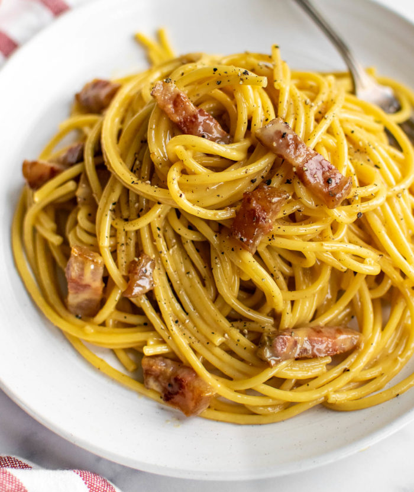

Carbonara

Description
Ingredients
- Pancetta - 1lb/diced
- Eggs - 4(2 yolks and 2 whole)
- Parmesan - 1/2 cup/grated
- Pecorino - 1/2 cup/grated
- Bucatini - 1lb
- Pepper - 1 tsp/to taste
- Extra-virgin Olive Oil - 2 tbsp
- Salt - 1tbsp
- Garlic powder - 1 tsp
Steps
- Fill 8 qt pot with water halfway and set on stove at high heat
- Once pot is at a rolling boil, add salt
- Turn heat down to medium and add pasta, submerging in water
- Cook pasta al-dente according to box directions
- Reserve 1 cup of pasta water and drain remaining water
- While boiling the pasta, whisk together 2 yolks and 2 whole eggs, cheese, pepper, garlic powder in a mixing bowl until combined into a paste. Set aside
- Add olive oil to a saute pan and bring to medium-high heat
- Once oil is shimmering, add pancetta and saute until crispy. Turn stove off
- Add cooked/drained pasta to pan and toss with pancetta and oil
- Add egg mixture with 1/2 cup of reserved pasta water, using tongs to toss while combining
- Toss mixture for 1-2 mins until creamy consistency forms
- Serve immediately with grated cheese and pepper